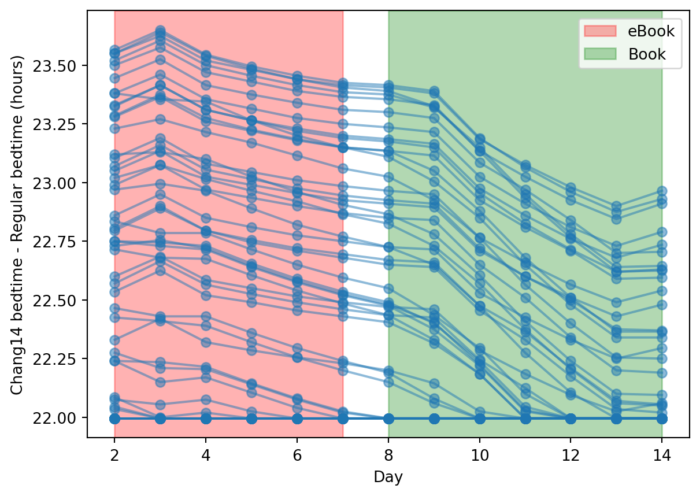
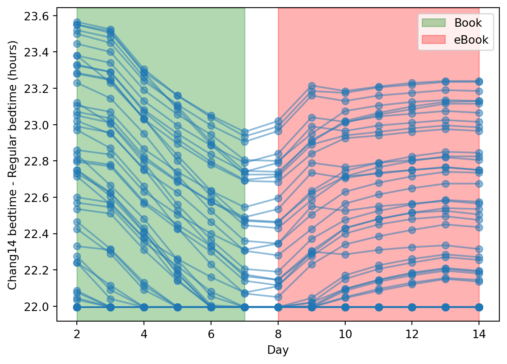
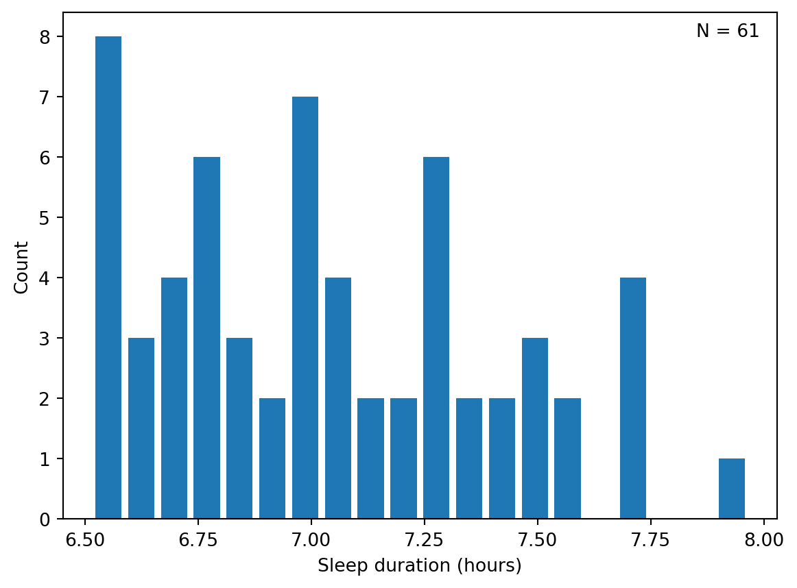

import numpy as npimport pandas as pdimport seaborn as snsimport matplotlib.pyplot as pltfrom circadian.models import Skeldon23time = light_schedule_time #TODO: Clean this up# TODO: Implement these functions on `circadian`def circadian_modulation_of_sleep(model, trajectory_states): x = trajectory_states[:, 0] xc = trajectory_states[:, 1] linear_term = model.c20 + model.alpha21 * xc + model.alpha22 * x quadratic_term = model.beta21 * xc * xc + model.beta22 * xc * x + model.beta23 * x * x C = linear_term + quadratic_termreturn Cdef H_thresholds(model, trajectory_states): C = circadian_modulation_of_sleep(model, trajectory_states) H_plus = model.H0 +0.5* model.Delta + model.ca * C H_minus = model.H0 -0.5* model.Delta + model.ca * C return H_plus, H_minus# Load selected parametersselected_parameters = pd.read_csv('data/parameter_exploration/selected_parameters.csv', index_col=0)# Calculate the bedtime for each daysleep_onset_data = pd.DataFrame()for reading_condition in ['ebook_first', 'ebook_second']:for idx in selected_parameters.index:try: data = np.load(f'data/skeldon23_on_chang14/chang14_simulation_{idx}.npz', allow_pickle=True)except:continue regular_sleep = data['regular_sleep'] chang14_sleep = data[f'{reading_condition}_sleep'] regular_sleep_changes = np.where(np.diff(regular_sleep) ==1)[0] chang14_sleep_changes = np.where(np.diff(chang14_sleep) ==1)[0] regular_sleep_changes_time = time[regular_sleep_changes] chang14_sleep_changes_time = time[chang14_sleep_changes]# don't count last day's sleep onset regular_sleep_changes_time = regular_sleep_changes_time[:-1] chang14_sleep_changes_time = chang14_sleep_changes_time[:-1] data_subset = {'idx': idx,'day': np.arange(2, 15),'regular_sleep_onset': regular_sleep_changes_time %24,'chang14_sleep_onset': chang14_sleep_changes_time %24,'reading_condition': reading_condition } sleep_onset_data = pd.concat([sleep_onset_data, pd.DataFrame(data_subset)])
Code
# Plot sleep onset for each idxfor reading_condition in ['ebook_first', 'ebook_second']:for idx in selected_parameters.index: plot_data = sleep_onset_data[(sleep_onset_data['idx'] == idx) & (sleep_onset_data['reading_condition'] == reading_condition)]# plt.plot(plot_data['day'], plot_data['sleep_difference'], 'o-', color='tab:blue', alpha=0.5) plt.plot(plot_data['day'], plot_data['chang14_sleep_onset'], 'o-', color='tab:blue', alpha=0.5)# color first week and second week differentlyif reading_condition =='ebook_first': plt.axvspan(2, 7, color='red', alpha=0.3, label='eBook') plt.axvspan(8, 14, color='green', alpha=0.3, label='Book')else: plt.axvspan(2, 7, color='green', alpha=0.3, label='Book') plt.axvspan(8, 14, color='red', alpha=0.3, label='eBook') plt.legend() plt.ylabel('Chang14 bedtime - Regular bedtime (hours)') plt.xlabel('Day') plt.show()


Code
sleep_onset_data['sleep_difference'] = sleep_onset_data['chang14_sleep_onset'] - sleep_onset_data['regular_sleep_onset']# Calculate the std of sleep difference for each idx and reading conditionstd_sleep_difference = sleep_onset_data.groupby(['idx', 'reading_condition']).std().reset_index()std_sleep_difference = std_sleep_difference.rename(columns={'sleep_difference': 'std_sleep_difference'})# keep idx, reading_condition, and std_sleep_differencestd_sleep_difference = std_sleep_difference[['idx', 'reading_condition', 'std_sleep_difference']]# calculate the mean of regular sleep onset for each idx and reading conditionmean_regular_sleep_onset = sleep_onset_data.groupby(['idx', 'reading_condition']).mean().reset_index()mean_regular_sleep_onset = mean_regular_sleep_onset.rename(columns={'regular_sleep_onset': 'mean_regular_sleep_onset'})# keep idx, reading_condition, and mean_regular_sleep_onsetmean_regular_sleep_onset = mean_regular_sleep_onset[['idx', 'reading_condition', 'mean_regular_sleep_onset']]# merge the two dataframessleep_difference_statistics = pd.merge(std_sleep_difference, mean_regular_sleep_onset, on=['idx', 'reading_condition'])plt.plot(sleep_difference_statistics['std_sleep_difference'], sleep_difference_statistics['mean_regular_sleep_onset'], 'o', alpha=0.5)plt.xlabel('Stdev of (Chang14 - Regular bedtime)')plt.ylabel('Regular sleep bedtime')plt.show()
Code
# histogram of sleep sleep time from selected parameterssleep_time = selected_parameters['sleep_time']plt.hist(sleep_time, bins=20, rwidth=0.8)plt.xlabel('Sleep duration (hours)')plt.ylabel('Count')plt.show()

Code
# calculate the difference between day 13 and day 6bedtime_day_6_ebook_first = sleep_onset_data[(sleep_onset_data['day'] ==6) & (sleep_onset_data['reading_condition'] =='ebook_first')]['chang14_sleep_onset'].to_numpy()bedtime_day_13_ebook_first = sleep_onset_data[(sleep_onset_data['day'] ==13) & (sleep_onset_data['reading_condition'] =='ebook_first')]['chang14_sleep_onset'].to_numpy()difference_1 = bedtime_day_6_ebook_first - bedtime_day_13_ebook_firstbedtime_day_6_ebook_second = sleep_onset_data[(sleep_onset_data['day'] ==6) & (sleep_onset_data['reading_condition'] =='ebook_second')]['chang14_sleep_onset'].to_numpy()bedtime_day_13_ebook_second = sleep_onset_data[(sleep_onset_data['day'] ==13) & (sleep_onset_data['reading_condition'] =='ebook_second')]['chang14_sleep_onset'].to_numpy()difference_2 = bedtime_day_13_ebook_second - bedtime_day_6_ebook_seconddifference = np.concatenate([difference_1, difference_2])# boxplot of differencesns.boxplot(data=difference *60)sns.stripplot(data=difference *60, color='black', alpha=0.5)plt.ylabel('eBook - Book bedtime difference (min)')plt.show()
Code
# ebook bedtimes are day 6 on ebook first and day 13 on ebook secondebook_bedtime_1 = sleep_onset_data[(sleep_onset_data['day'] ==6) & (sleep_onset_data['reading_condition'] =='ebook_first')]ebook_bedtime_2 = sleep_onset_data[(sleep_onset_data['day'] ==13) & (sleep_onset_data['reading_condition'] =='ebook_second')]ebook_bedtime = pd.concat([ebook_bedtime_1, ebook_bedtime_2])book_bedtime_1 = sleep_onset_data[(sleep_onset_data['day'] ==6) & (sleep_onset_data['reading_condition'] =='ebook_second')]book_bedtime_2 = sleep_onset_data[(sleep_onset_data['day'] ==13) & (sleep_onset_data['reading_condition'] =='ebook_first')]book_bedtime = pd.concat([book_bedtime_1, book_bedtime_2])data_plot_1 = pd.DataFrame({'condition': 'eBook','sleep_onset': ebook_bedtime['chang14_sleep_onset'],})data_plot_2 = pd.DataFrame({'condition': 'Book','sleep_onset': book_bedtime['chang14_sleep_onset'],})data_plot = pd.concat([data_plot_1, data_plot_2])# seaborn boxplot showing the dotssns.boxplot(x='condition', y='sleep_onset', data=data_plot, showfliers=False)sns.stripplot(x='condition', y='sleep_onset', data=data_plot, color='black', alpha=0.5)plt.ylabel('Bedtime (hours)')plt.xlabel('Reading condition')plt.show()